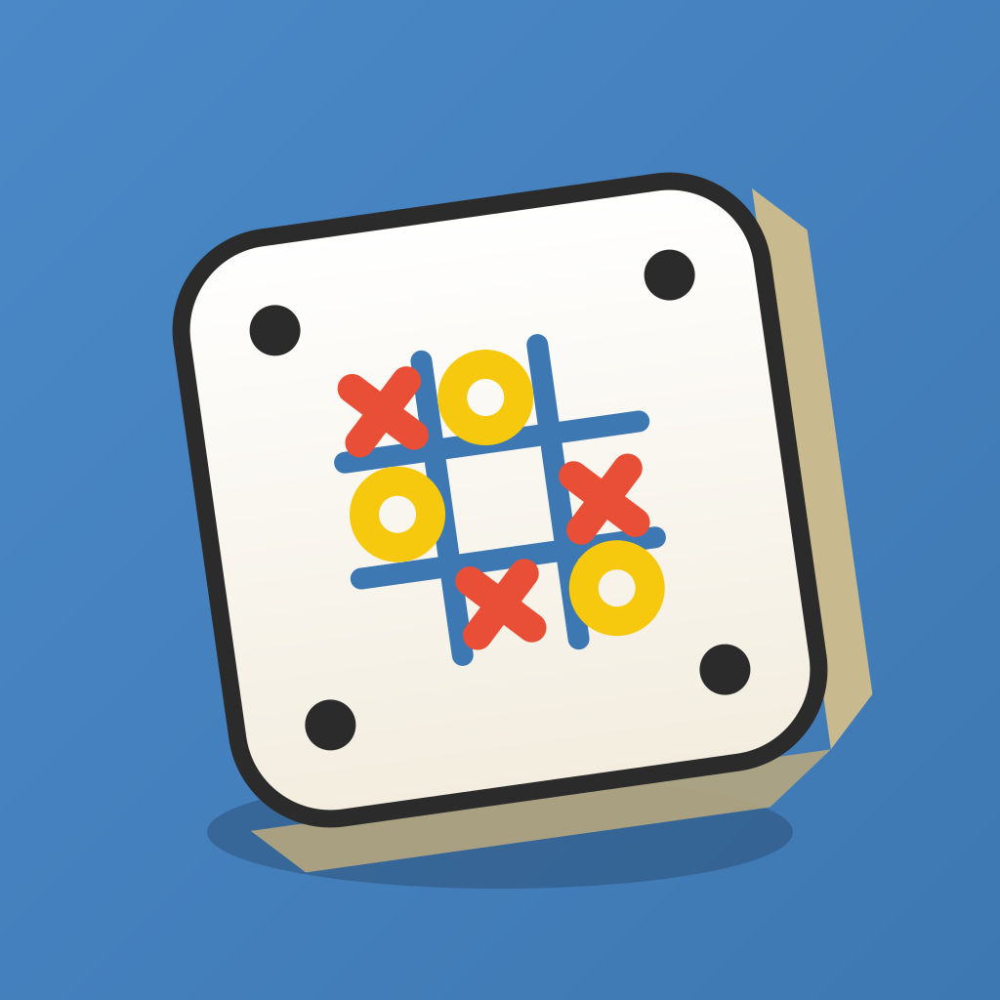

TicTacRoll — Tic-Tac-Toe... but the dice decide where you play!
A dice-driven take on Ultimate Tic-Tac-Toe. The big 3×3 grid is made of nine numbered tic-tac-toe boards — each turn you roll two dice, and the total tells you which board you're allowed to play in. Win three boards in a row for an instant victory, or score the most points if the grid fills up first. Special rolls add real strategy: a 2 lets you remove an opponent's pin, a 12 is wild, and doubles trigger a superpower move.
Pass & Play — hand the phone to a friend, 2-4
players, teams supported.
vs Computer — three AI difficulties, from relaxed to
a real challenge.
Local Wi-Fi — head-to-head with a nearby friend, no
internet needed.
Online Multiplayer — play anyone, anywhere, with
matchmaking and a global leaderboard.
Is TicTacRoll free? Yes — free to play, no sign-up required to start.
How do I play with a friend? Send them a game code or invite link (like the one that opened this page), or play pass-and-play on one phone.